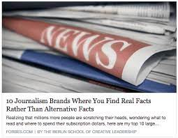
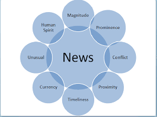

All about Fake News
Latest News
The latest news out right now you need to know.
Home
DebunkedNews
Latest News
Links
Video

News that is reliable and true

Article on what news really is
Top 10 most reliable news sources